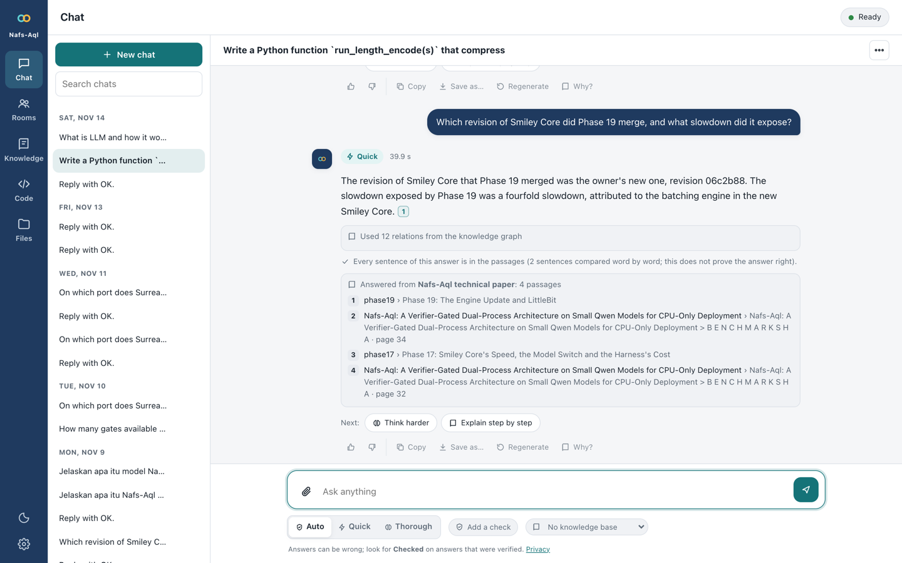
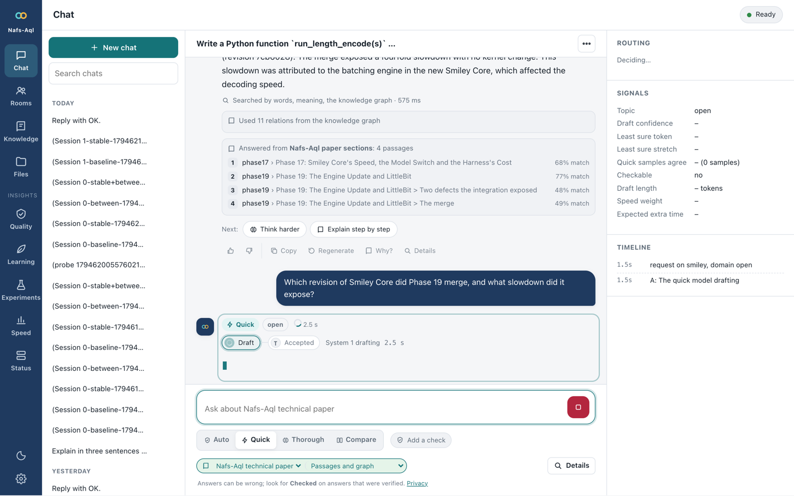
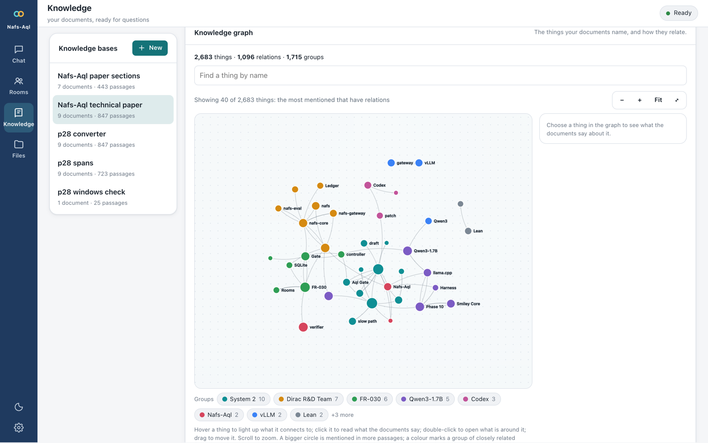
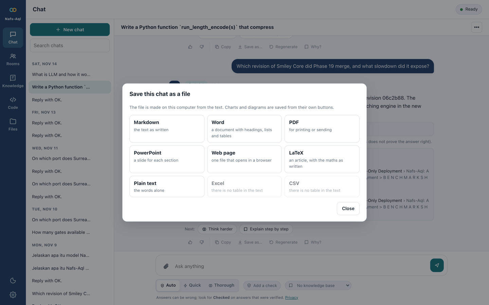

Checked, or "Not sure"
Maths, code against tests and data against a schema are decided by a checker. Every answer is labelled Checked, Cross-checked or Not checked. When nothing earns acceptance, it says it is not sure.
Nafs-Aql is an AI assistant that runs on four CPU cores, answers from your own documents, and tells you when it is not sure. No GPU. No API key. Nothing leaves your machine.
$ git clone https://github.com/rismanmattotorang/nafsaql.git && cd nafsaql
$ make models
$ make upThen open http://127.0.0.1:8080. You need Rust 1.96+, Python 3.10+ and about 4 GB of disk.

Small models are fast and wrong too often. Large models are careful and need a GPU or someone else's servers. Neither tells you which of its answers to trust.
A small model answers at once. A reasoning model steps in only when the question is worth the wait. Where an answer can be checked, a checker decides, not the model.
Maths, code against tests and data against a schema are decided by a checker. Every answer is labelled Checked, Cross-checked or Not checked. When nothing earns acceptance, it says it is not sure.
Drop in PDF, Word, PowerPoint, Excel, LaTeX, web pages or notes. Every claim points at the passage that states it, and the answer says which of its sentences are not in those passages.
What you say about yourself becomes a memory file you can read, edit and delete. Every change is logged and can be undone. Private chats and rooms are never remembered.
Documents, memories, skills and saved chats live in one tree with an address for each (nafs://…). Every folder and document has a summary made without a model.
While you read an answer, the reasoning model reads the conversation. In four-turn test sessions on a quiet machine it then started in 2.0 s instead of 36.6 s. Sending a message stops it at once.
No GPU. No API key. Nothing leaves your machine. The reference machine is one shared 4-core Intel i3-8100 with 32 GB of memory.
One shared 4-core Intel i3-8100, 32 GB, no GPU. Every figure comes from a stored run in the repository.
The machine was shared with other work during most runs and comparisons use tens of items. The numbers show direction, not release-grade statistics. Method, sources and what did not work.
The gate escalates only when the error it expects to save is worth the waiting time. Where a checker exists its verdict is final. Agreement between samples is a hint, never proof.
Every answer from documents lists the passages it used and says which searches ran. Click a number to read the passage. If nothing in the library matches well, the answer says No strong match.
Under the answer you see either that every sentence is in the passages, or which sentences are not. The comparison uses words and numbers, with no model.


The graph is drawn from the text the moment a file is read, with no model call. A deeper pass adds relations, and keeps one only when the sentence that states it occurs in the passage word for word.
Click a thing to read the sentences about it. Save the picture as SVG or PNG.
Sixteen researched cases where local, CPU-only and private is the requirement, each with the evidence for the need and the limit you should know first.
Law, healthcare administration, finance and audit, tax and accounting, human resources, compliance. Cited answers from the files you load, in a deployment you control.
Six casesStaff questions from regulations, maths and programming practice with checked answers, unpublished manuscripts, sensitive source documents.
Four casesManuals at the machine, private source code, the contracts and price lists of a small business on the PC it already owns.
Three casesAir-gapped networks, data-residency rules, and places with no reliable internet.
Three casesThe evidence on that page describes the need. It is not a result of any Nafs-Aql deployment, and none is claimed.
After NVIDIA's CPU-ARC (arXiv 2611.09891). The careful model's checked maths answers become small programs while the machine is idle; the same problem asked again is answered by running the program on the CPU. Measured on 12 problems and 64 variants on the reference machine.
A question with the stored wording and new numbers is read by its template and answered by the program: 24 of 24 right, 0.1 s, against 20.8 s on the usual path and 85.5 s from the reasoning model.
A reworded question is found by meaning; the quick model confirms it is the same question and reads its values. 13 of 14 right. A near miss, such as an area asked where a perimeter was kept, is refused: 0 of 14 answered.
A program answers only after agreeing with the models twice; one that disagrees with a checked answer is stopped. Every step is narrated, every program can be read, stopped or deleted, and the cache exports as one Python file.
Released 2026-11-22. Engine numbers were measured on the reference machine while it was shared, with every comparison interleaved.
The model that answered now reads the conversation too. First token of a later turn: 4.25 s to 0.71 s for quick answers and 18.6 s to 2.4 s for reasoning answers (medians of 9 and 6 turns). The gain needs a pause longer than the reading.
A request takes its cached state instead of copying it. Hand-off at 2,048 tokens: 240 ms to 0 on the 1.7B model and 457 ms to 0 on the 4B model. With the first token taken from the last prompt chunk: 329 to 229 ms and 1,075 to 568 ms.
On four threads the 1.7B model wrote 19 % faster and read prompts 14 % faster; the 4B model 33 % and 10 %. On three threads the 1.7B model was inside noise. A cold first request: 14.6 s to 9.2 s with read-ahead.
Read PDF, Word, PowerPoint, Excel, CSV, LaTeX, HTML, Markdown and text, into a knowledge base or attached to one question. Save an answer or a chat as Markdown, Word, PDF, PowerPoint, a web page, LaTeX, plain text, Excel or CSV, made on the machine.
Describe a small Python function and its tests. It is written and run in a sandbox with no network, step by step, and can be stopped. First step passed on 12 of 12 from-scratch tasks after a prompt fix (1 of 12 before), median 7.9 s.
Tables sort and export. Code has line numbers, wrap and save. Charts, diagrams and formulas save as SVG or PNG. Settings are in plain language with presets, search and "put back". Configuration is validated at start-up.

A research preview, built in the open. These limits are stated in the project's own documents, and here before you find them.
Each of these was built or measured, and left off. The measurements are on the evidence page.
You need Rust 1.96+, Python 3.10+ and about 4 GB of disk. Open http://127.0.0.1:8080 when it is up. make down stops everything.
# 1. Get the code
$ git clone https://github.com/rismanmattotorang/nafsaql.git && cd nafsaql
# 2. Download the two models
$ make models
# 3. Build and start
$ make up